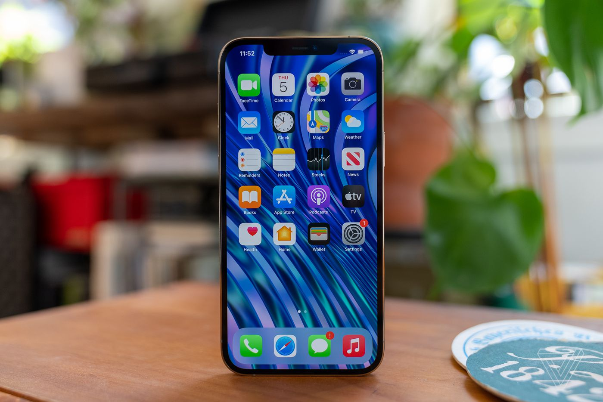
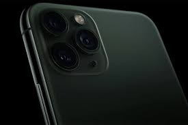
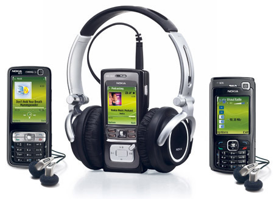

.jpg)
| Type | Description | image |
|---|---|---|
| Smart Phones | Smart phones are high specification phones that operate like miniature computers. They can usually do tasks like connect to the internet and receive emails. Recent examples of smart phones are the Apple iPhone, Blackberrys and Google Android phones. |  |
| Camera Phones | Camera phones come with a built in camera. Some new camera phones are reaching the 12 megapixel mark, though a standard model will frequently between 2 and 8 megapixels. |  |
| Music Phones | Music phones will ideally have a good mp3/aac audio player and enough memory to hold a reasonable amount of songs. Always make sure that your phone has plenty of onboard/included memory, or is upgradable to have more memory via an SD/memory card slot. Ideally you will want at least 1-2gb, though it is possible to get up to 16gb. |  |
| 3G Phones | Phones designed to work on the 3G system. 3G opens up faster communication and browsing speed. Phones frequently feature internet browsing and video call. | |
A mobile phone, cellular phone, cell phone, cellphone, handphone, or hand phone, sometimes shortened to simply mobile, cell or just phone, is a portable telephone that can make and receive calls over a radio frequency link while the user is moving within a telephone service area. The radio frequency link establishes a connection to the switching systems of a mobile phone operator, which provides access to the public switched telephone network (PSTN). Modern mobile telephone services use a cellular network architecture and, therefore, mobile telephones are called cellular telephones or cell phones in North America. In addition to telephony, digital mobile phones (2G) support a variety of other services, such as text messaging, MMS, email, Internet access, short-range wireless communications (infrared, Bluetooth), business applications, video games and digital photography. Mobile phones offering only those capabilities are known as feature phones; mobile phones which offer greatly advanced computing capabilities are referred to as smartphones.
The development of metal-oxide-semiconductor (MOS) large-scale integration (LSI) technology, information theory and cellular networking led to the development of affordable mobile communications.[1] The first handheld mobile phone was demonstrated by John F. Mitchell[2][3] and Martin Cooper of Motorola in 1973, using a handset weighing c. 2 kilograms (4.4 lbs).[4] In 1979, Nippon Telegraph and Telephone (NTT) launched the world's first cellular network in Japan.[citation needed] In 1983, the DynaTAC 8000x was the first commercially available handheld mobile phone. From 1983 to 2014, worldwide mobile phone subscriptions grew to over seven billion; enough to provide one for every person on Earth.[5] In the first quarter of 2016, the top smartphone developers worldwide were Samsung, Apple and Huawei; smartphone sales represented 78 percent of total mobile phone sales.[6] For feature phones (slang: "dumbphones") as of 2016, the top-selling brands were Samsung, Nokia and Alcatel.
The common components found on all mobile phones are:
A central processing unit (CPU), the processor of phones. The CPU is a microprocessor fabricated on a metal–oxide–semiconductor (MOS) integrated circuit (IC) chip.
A battery, providing the power source for the phone functions. A modern handset typically uses a lithium-ion battery (LIB), whereas older handsets used nickel–metal hydride (Ni–MH) batteries.
An input mechanism to allow the user to interact with the phone. These are a keypad for feature phones, and touch screens for most smartphones (typically with capacitive sensing).
A display which echoes the user's typing, and displays text messages, contacts, and more. The display is typically either a liquid-crystal display (LCD) or organic light-emitting diode (OLED) display.
Speakers for sound.
Subscriber Identity Module (SIM) cards and Removable User Identity Module (R-UIM) cards.
A hardware notification LED on some phones
Low-end mobile phones are often referred to as feature phones and offer basic telephony. Handsets with more advanced computing ability through the use of native software applications are known as smartphones.
Mobile phones have central processing units (CPUs), similar to those in computers, but optimised to operate in low power environments. Mobile CPU performance depends not only on the clock rate (generally given in multiples of hertz)[21] but also the memory hierarchy also greatly affects overall performance. Because of these problems, the performance of mobile phone CPUs is often more appropriately given by scores derived from various standardized tests to measure the real effective performance in commonly used applications.
One of the main characteristics of phones is the screen. Depending on the device's type and design, the screen fills most or nearly all of the space on a device's front surface. Many smartphone displays have an aspect ratio of 16:9, but taller aspect ratios became more common in 2017. Screen sizes are often measured in diagonal inches or millimeters; feature phones generally have screen sizes below 90 millimetres (3.5 in). Phones with screens larger than 130 millimetres (5.2 in) are often called "phablets." Smartphones with screens over 115 millimetres (4.5 in) in size are commonly difficult to use with only a single hand, since most thumbs cannot reach the entire screen surface; they may need to be shifted around in the hand, held in one hand and manipulated by the other, or used in place with both hands. Due to design advances, some modern smartphones with large screen sizes and "edge-to-edge" designs have compact builds that improve their ergonomics, while the shift to taller aspect ratios have resulted in phones that have larger screen sizes whilst maintaining the ergonomics associated with smaller 16:9 displays.
Liquid-crystal displays are the most common; others are IPS, LED, OLED, and AMOLED displays. Some displays are integrated with pressure-sensitive digitizers, such as those developed by Wacom and Samsung,[25] and Apple's "3D Touch" system.